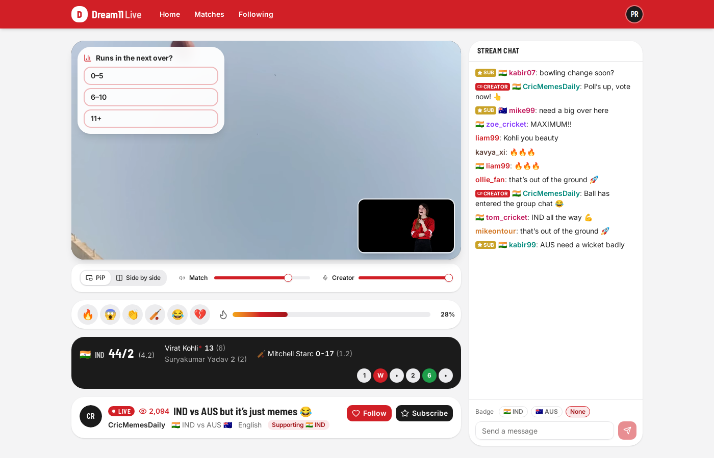

A live streaming platform where cricket fans watch a match through their favourite creator, with live score, chat, emoji reactions, a hype meter and polls on one screen.
| GitHub | github.com/swallowbirb/dream11-live |
| Live deployment | dream11-live.vercel.app Log in as priya / pass (viewer) or RohitReacts / pass (creator).
The server runs on a free plan, so the first load after a quiet spell can take about a minute. |
| Demo video | DEMO_VIDEO_LINK |
In India, cricket is watched together. Fans argue over a bowling change, celebrate a six and groan at a dropped catch with friends and family. That shared reaction is half the fun of a match. But most fans now watch alone on a phone, and the tools they have don't recreate that feeling:
Dream11 Live is a Twitch-style platform built around cricket matches instead of games.

| Option fans use today | What it misses |
|---|---|
| TV / OTT broadcast | One-way. No community, no choice of voice or language beyond a few feeds. |
| YouTube watch-along | 10–30 s delay, creator and match baked into one video, score and friends in other apps. |
| Score apps and text commentary | Fast, but no voice, no faces, no shared moment. |
| Discord / WhatsApp watch party | Only with people you already know; not discoverable; no score built in. |
Dream11 Live combines what each of these does well, and the design choices behind it are deliberate:
MatchFeed interface (a replayed match today, a live cricket API tomorrow) and video
through a VideoProvider interface, so either can be swapped without touching the app.Dream Sports' mission is to Make Sports Better, and Dream11's strength is being where fans are during a live match. Dream11 Live extends that from picking a team before the toss to watching the whole match together:
| Layer | Technology |
|---|---|
| Frontend | React 19, Vite 8, TypeScript, Tailwind CSS 4, shadcn/ui (Radix), TanStack Query, Zustand, Motion |
| Backend | Node.js 22, Fastify 5, Socket.IO 4, Zod 4 (validation shared with the client) |
| Data | Prisma 6 on SQLite (Postgres with a one-line change) |
| Video | LiveKit Cloud (WebRTC SFU), livekit-client, livekit-server-sdk |
| Tooling | pnpm workspaces monorepo, strict TypeScript, Playwright (headless end-to-end checks), FFmpeg |
| Hosting | Vercel (web app), Render via Docker (API, WebSockets and the bot director) |
The monorepo has three packages: apps/web (React app), apps/server (Fastify + Socket.IO,
Prisma, match feed, bots) and packages/shared, which holds every socket event name, payload type and
Zod schema so the client and server can't drift apart.
The product decisions were mine: the problem, which features to keep and cut, the design and the tech trade-offs. AI made it possible to build and properly test a full real-time product in a very short time.
| Problem faced | How I navigated it |
|---|---|
| Riskiest part first: two video sources with separate audio from a browser. If the match and the camera couldn't go out as separate tracks, the custom layouts and audio mix were impossible. | Built a small spike before anything else and tested it headless on LiveKit Cloud. It proved four tracks (match video and audio, camera, mic) work, and showed that LiveKit's event listeners must be registered before connecting. The whole app was planned only after that passed. |
| Testing live video without a person. Playwright's Chromium can't play H.264, so normal MP4 test videos showed black. | Generated WebM test media with FFmpeg and ran Chromium with a fake camera and mic, so every video feature could be checked automatically, with several browsers at once. |
| Side-by-side layout left the match video black for good if a viewer switched layout soon after joining. | Traced it to the layout switch remounting the video element while LiveKit's adaptive streaming had paused the track. Fixed by keeping the main video element mounted and changing only the layout around it. |
| Reactions could flood the server and showed twice for the person tapping. | Batched taps on the client every 250 ms and aggregated them on the server, which broadcasts one burst per stream four times a second. The tapper's own taps float at once, and their echo is subtracted from the next burst. |
| No reliable live cricket data. Free cricket APIs have low daily limits (polling every 15 s is about 5,700 requests per match per day), and there isn't always a live match. | Put scores behind a MatchFeed interface and built a ReplayFeed that plays a recorded innings
ball by ball at any speed. A live match can be staged any time, and a real API can be added later. |
| An empty platform looks broken (the cold start problem): a reviewer opening the site would find no one live. | Built a server-side bot director: six creator personas stream real cricket footage (free-licence clips) with reacting facecams; 60 chatters post lines that react to each six, four and wicket; polls run on their own. |
| Deployment: WebSockets don't run on serverless hosting, and the free server plan has no disk. | Split the deploy: the static web app on Vercel, and the long-running Socket.IO server in a Docker container on Render, with CORS for Vercel domains. The seed is idempotent, so demo data and bots rebuild themselves after every restart. |
| A very tight time budget for a product with video, real time, social features and polish. | Wrote the plan first: three modules, timeboxes, a demo script as the acceptance test and a cut list in priority order. Built the happy path only, and parked new ideas instead of building them. |
Before each over or delivery, viewers predict the outcome ("runs this over", "wicket this over?") for free points. The match feed already knows every ball, so predictions settle automatically. Each stream gets its own leaderboard, and the creator can call out the top fans live. This is Dream11's core strength (fantasy and predictions) brought into the live moment, and it gives every viewer a reason to stay for every ball.
Replace the replayed match with a live cricket data API behind the existing MatchFeed interface. Then
use those score events to cut clips automatically: when a wicket or six happens, record the creator's reaction with
the match (LiveKit Egress) and post it to the match page. Fans who missed it can catch up, and the best reactions
become shareable content that brings new fans in.